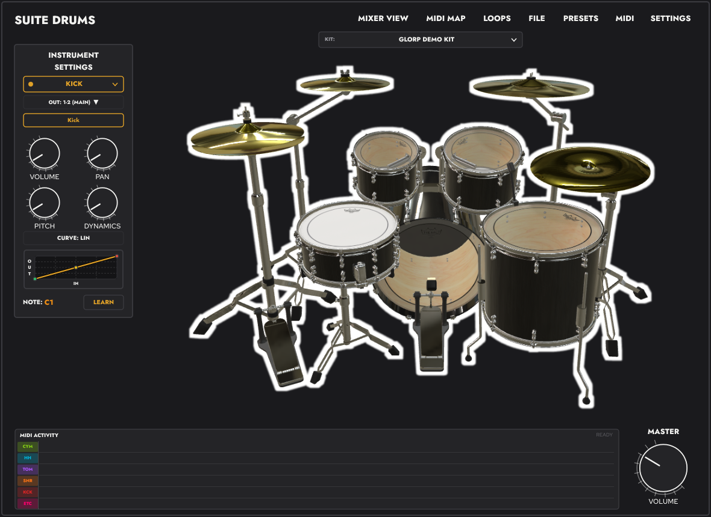
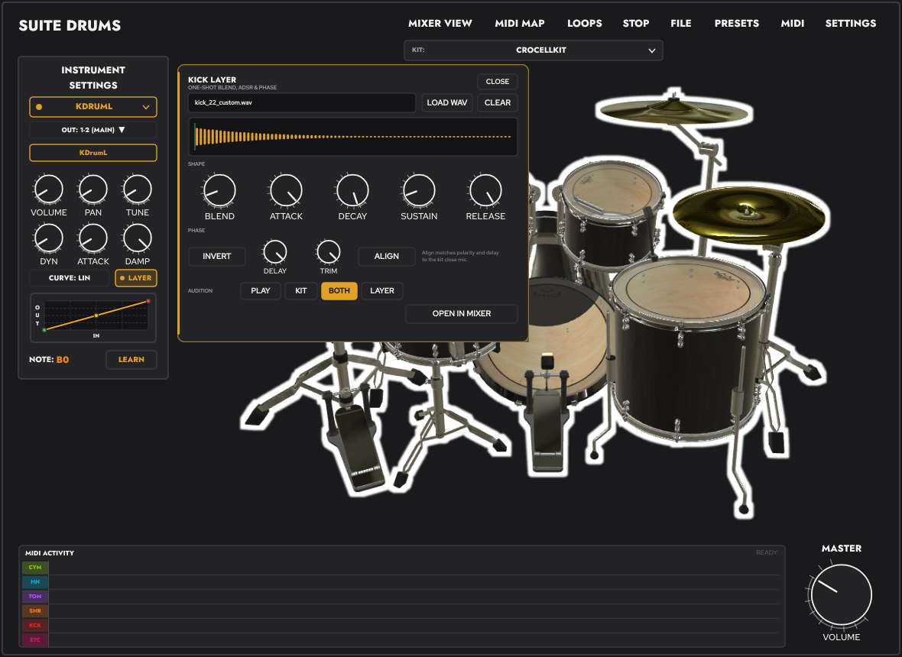
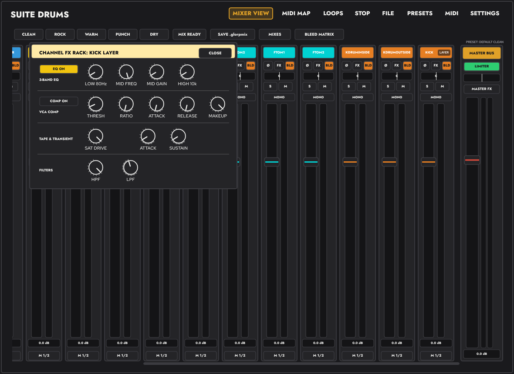
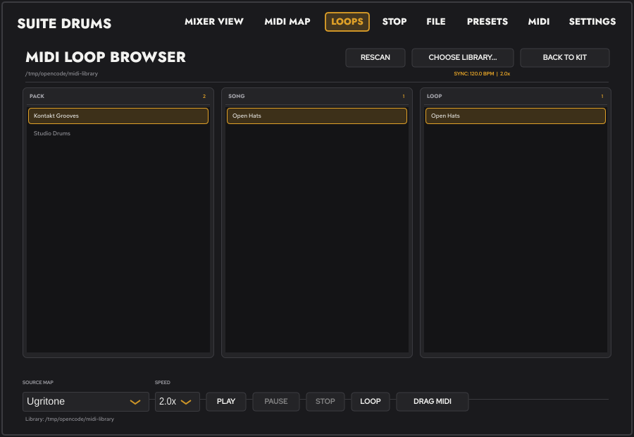
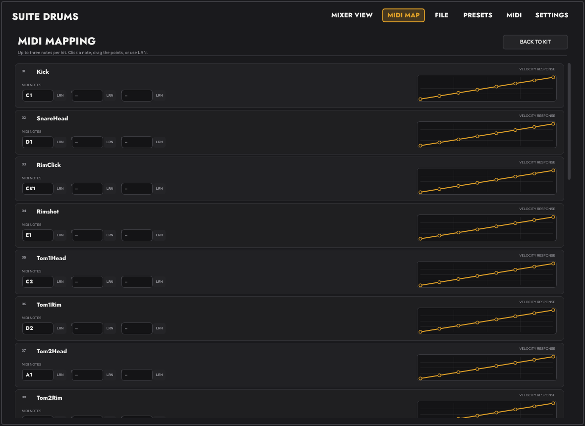
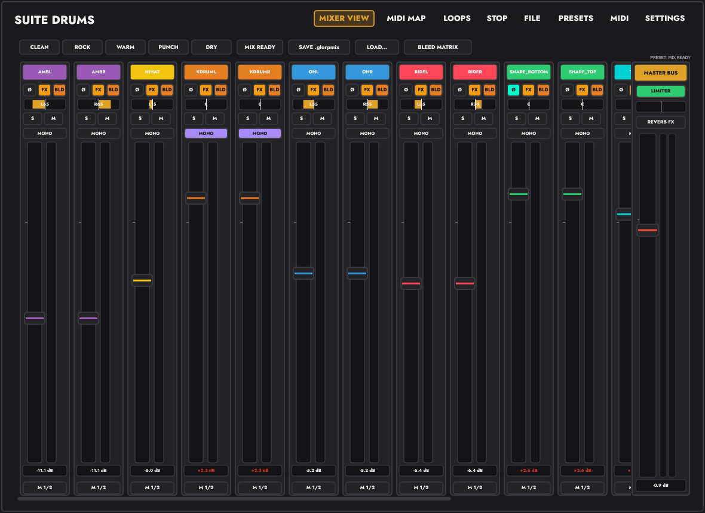
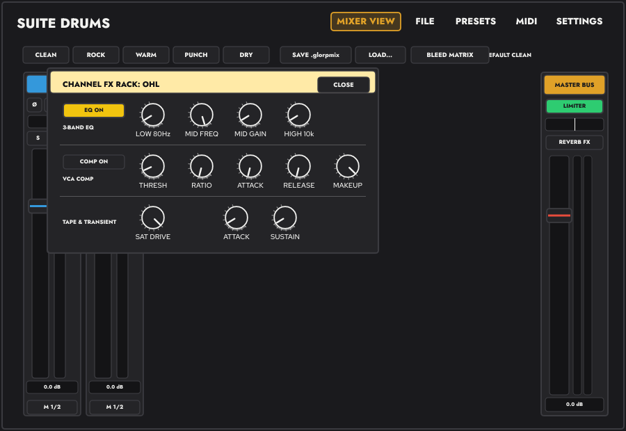

Suite Drums Glorp
A focused acoustic drum instrument for Linux: VST3/LV2, interactive kit view, per-mic mixer,
channel FX, e-drum input, multi-mic bleed matrix, user one-shot layers and the .glorpkit editor.
Kit view

Drum engine
Zones, velocity layers, round-robin and zero-copy sample playback.
Mixer + FX
Per-mic channels, stems, EQ, compressor, saturation and transient shaping.
E-drums
Continuous CC#4 hi-hat, chokes, note mapping and a calibration wizard.
Bleed matrix
Acoustic leakage between close mics, overheads, room and PZM channels.
Kick + snare layers
Load a WAV one-shot, blend it with the kit, shape ADSR and align phase to the close mic.
Kick and snare one-shot layers
Drag or load a WAV one-shot into the kick or snare, crossfade it against the kit sample, A/B audition kit and layer, shape it with ADSR, auto-trim leading silence, then invert polarity or align it to the close mic. Each layer gets its own mixer strip with the full channel FX rack, and a missing sample can be relinked without losing its settings.


MIDI loop browser
Browse PACK / SONG / LOOP folders, audition with play/pause/stop and repeat at host tempo, adjust 0.5x/1x/2x speed, translate between source-library note maps and the current kit, and drag the remapped MIDI into the DAW.

MIDI mapping
Up to three notes per hit, per-slot learn and a draggable eight-point velocity curve editor.

Mixer and channel FX


Get it
Download the Linux alpha from the GitHub releases page, or build from source with CMake and JUCE 8.